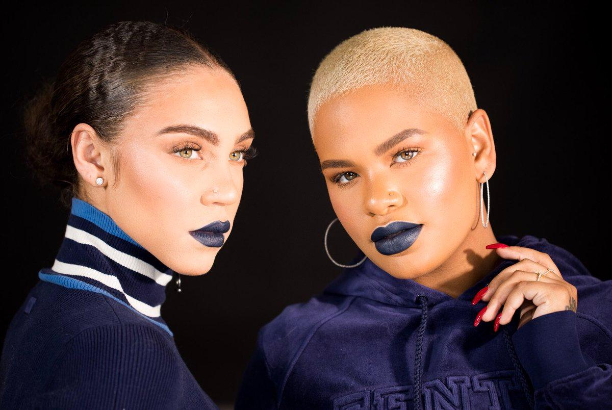
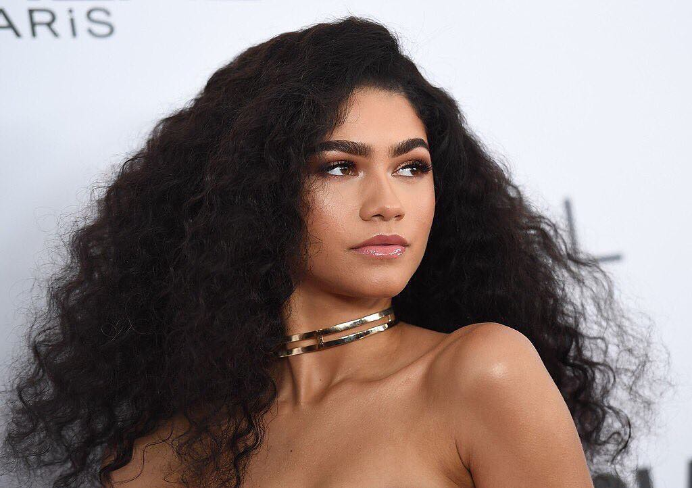

Founded by Chukwuma Maybel Olachi with LVMH in 2019, Maybelley reflects her own personal style,character and experiences. Each release from the maison explores several different fascinations that when combined reveal new facets of womanhood and the wardrobe itself.She is also a fashion model,artist and an information scientist.
Maybelley is your one-stop online shop for today most daring,exciting and edgy fashion appareal.
Our affordable collections are all about redefining trends,
design excellence and exceptional quality to satisfy the needs of every aspiring fashionista.
Maybelley challenges the rules of fashion- the maison forms the staples of wardrobe. Born in Nigeria,Maybelley lives
online. Through the digital flagshio,special edition releases are available on our website and will express a new facet of a woman
and her wardrobe.
A woman's wardrobe is her opportunity to stand out and making a lasting first impression.
Maybelline Fashion Store offers a wider range
of apparel to fit any woman's unique sense of style.Our clothing and accessories are carefully
curated to provide our customers in style we post new arrivals daily,as well as offer stylist
picks to help and indecisive shoppers. Maybelline Fashion Store is a best fashionista's best place to create
the perfect wardrobe.
Beyond helping you look your best,we strive to make every purchase a positive experience.
Our top priorities are excellent customers, exceptionally quick order processing, ultra fast shipping times
and a hassle-free return policy. We value your feedback, whether positive or constructive and we are
continously working to improve your experience.
